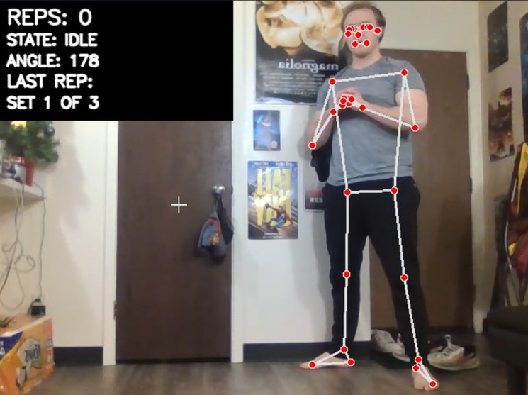
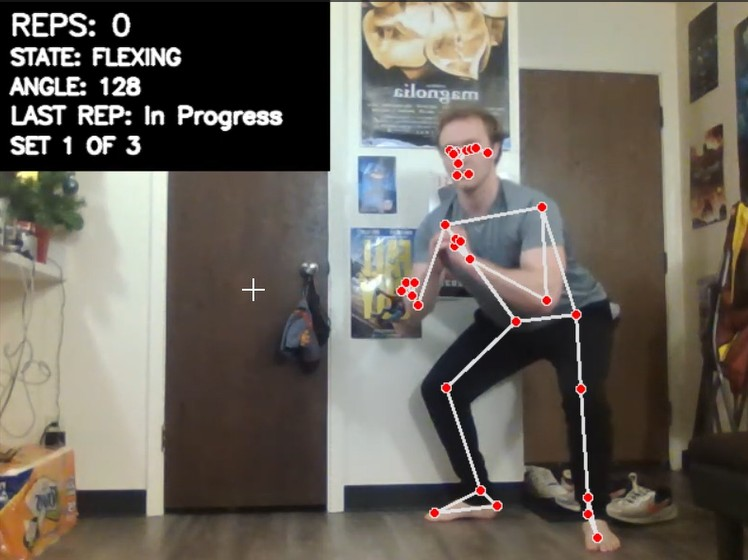
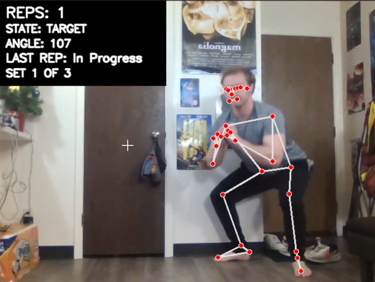
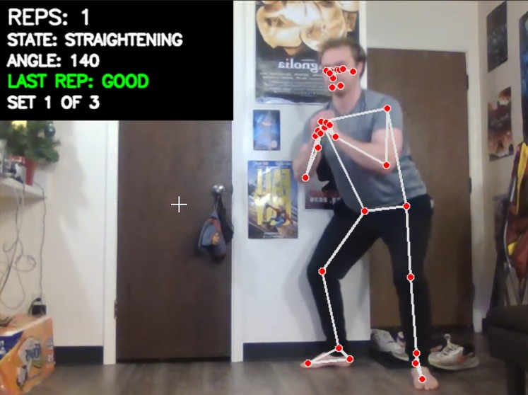
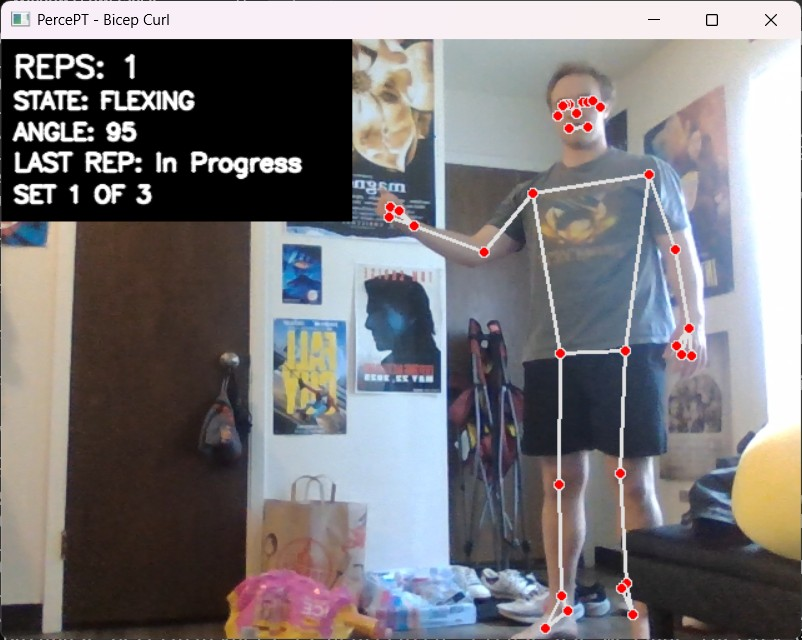
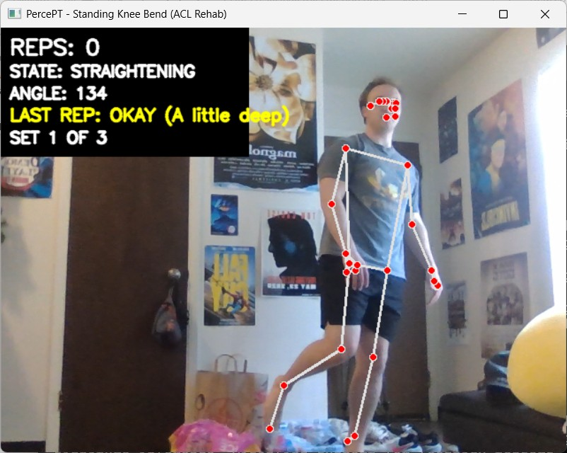
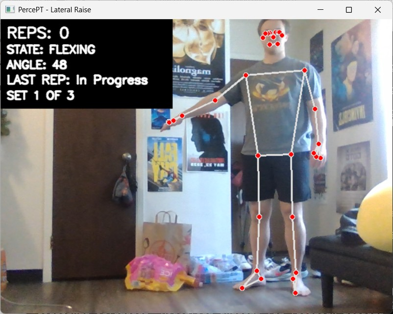
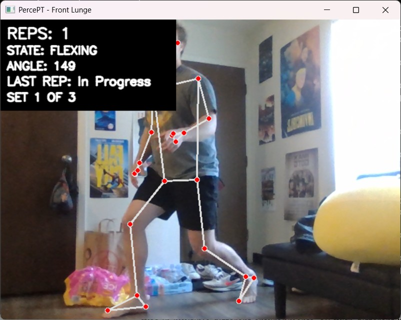

Physical Therapy Movement Tracking via Computer Vision
PercePT is a computer vision application designed to track and analyze physical therapy movements. Utilizing MediaPipe and OpenCV, the system monitors specific exercises (such as squats and bicep curls) in real-time. It implements a Finite State Machine (FSM) logic to count repetitions and evaluate form, while utilizing a One Euro Filter to smooth the signal data and reduce jitter.
The codebase can be found at this link. You can read the full documentation in the Project Report.
Squat
Bicep Curl
Lateral Raise
Front Lunge
Knee Bend

Idle State of the squat exercise.

Flexing State of the squat exercise.

Target State of the squat exercise.

Straightening State of the squat exercise.

Flexing State of the bicep curl exercise.

Flexing state of the knee bend exercise.

Flexing state of the lateral raise exercise.

Flexing state of the front lunge exercise.